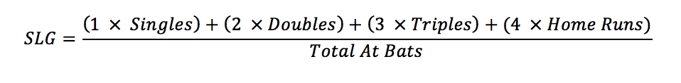

Problem made by Lockheed Martin, is CodeQuest 2017 Problem 7
This problem has a difficulty of 25
In baseball statistics, the slugging percentage (SLG) is a popular measure of the power of a hitter. You will be given a list of players and their at-bats for a single game. You will need to compute each player’s slugging percentage. For this exercise, no player will be hit by a pitch.
The slugging percentage is found by counting all the singles, doubles, triples, and home runs in a given game and applying a set weight to each achievement (home runs are worth more than singles), then dividing that number by the total number of at-bats in that game as shown here:

The first line of the file Prob07.in.txt will contain a positive integer T denoting the number of test cases that follow. Each test case will have the following input:
• A single line of input per player consisting of the batter’s name, a colon, and some number of at-bats separated by commas.
A player’s at bats can be any of the following:
• BB means the player was walked by the pitcher and does NOT count as an at-bat.
• K is an at-bat where the player struck out and did not reach a base.
• 1B is an at-bat where the player hit a single.
• 2B is an at-bat where the player hit a double.
• 3B is an at-bat where the player hit a triple.
• HR is an at-bat where the player hit a home run.
Please note that not every player in the game has the same number of at bats. If a player has no at-bats, then their slugging percentage should be 0.
4
Moreland:K,2B,1B,HR
Andrus:BB,BB,2B,K
Chirinos:1B,1B,3B
Odor:1B,K,3B
For each test case, your program should output the player’s name, as it appeared in the input, an equal sign and then their slugging percentage rounded to 3 decimal places, no spaces. Use the standard Code Quest rounding rules found in Appendix A.
Moreland=1.750
Andrus=1.000
Chirinos=1.667
Odor=1.333